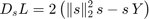
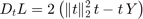

Contents
function [bg_spatial, bg_temporal] = rank_1_factorization(Y, maxIter)
RANK_1_FACTORIZATION Rank-1-matrix-factorization of the movie Y
Y ~ bg_spatial * bg_temporal
Input: Y movie max_iter maximum Number of Iterations
Output: bg_temporal temporal component of the rank-1-factorization bg_spatial spatial component of the rank-1-factorization
This algorithm performs a form a block-wise gradient descent on the objective function

Here, s corresponds to bg_spatial, and t corresponds to bg_temporal. This can be seen by calculating the gradient along s and t


and set them to zero. Between update we normalize the previously updated component. This simplifies the code and leads to better performance in the general case of NNMF.
if nargin<2 maxIter=1; end bg_spatial = ones(size(Y,1),1)/sqrt(size(Y,1)); for iter=1:maxIter bg_temporal = bg_spatial'*Y; bg_temporal = bg_temporal/norm(bg_temporal(:)); bg_spatial = Y*bg_temporal'; if iter<maxIter bg_spatial = bg_spatial/norm(bg_spatial(:)); end end
end